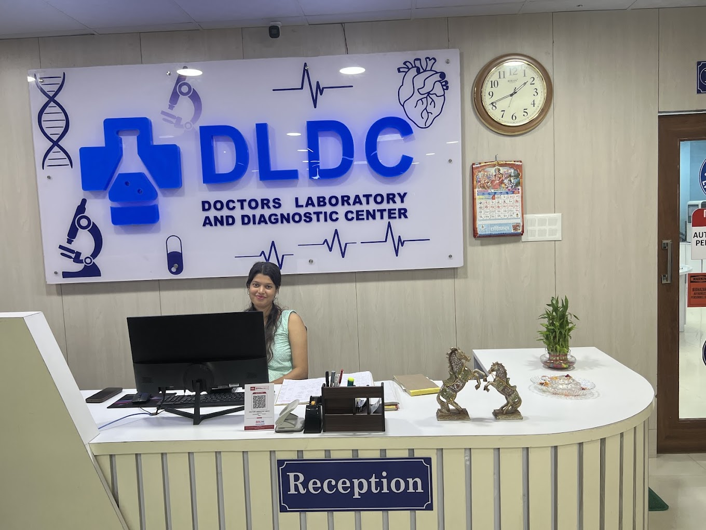
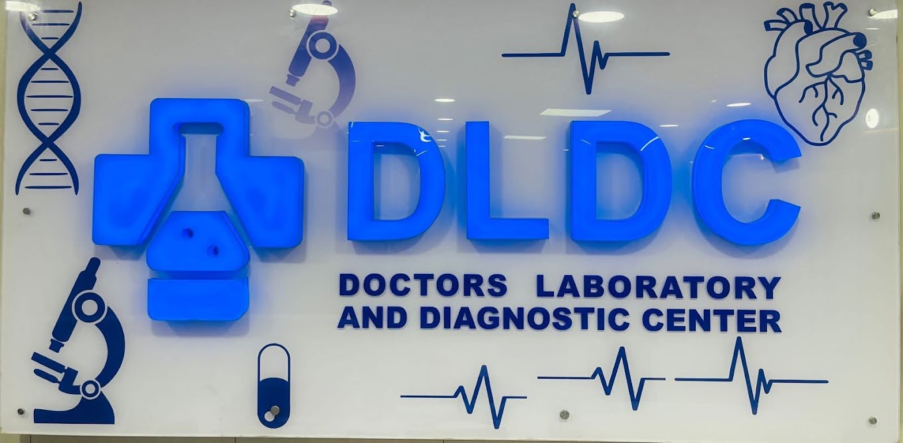
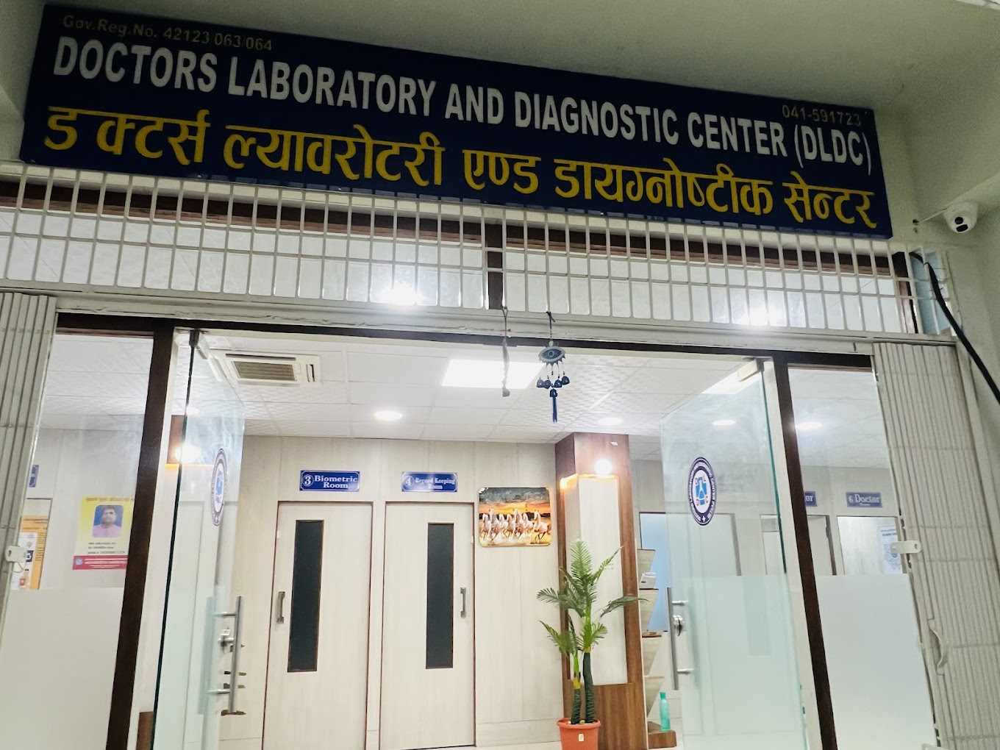
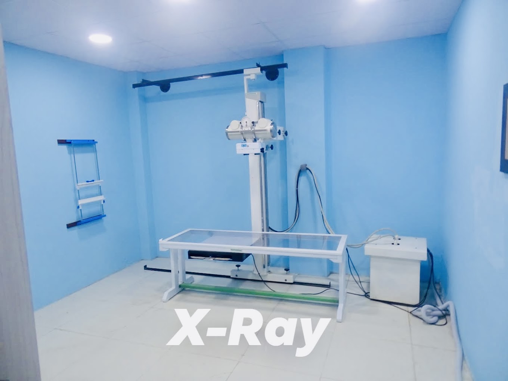

01
Laboratory testing
Routine investigations and blood tests. Public listings mention CBC, biochemistry, thyroid, Vitamin D and hormonal testing.
Ask about a testOpen daily · 7:00 AM–7:00 PM
Pidari Chowk, JanakpurDIAGNOSTIC CARE IN JANAKPUR
Thoughtful diagnostic services, right here in your community. We’re here to make your next step in care feel a little clearer.

Useful details
before you visit.
A NEIGHBORHOOD HEALTH RESOURCE
At Doctors Laboratory and Diagnostic Center, we believe reliable diagnostics play an important role in caring for your health. From our center in Pidari Chowk, we provide laboratory and diagnostic services for the Janakpur community.
With modern facilities and a dedicated team, we’re committed to offering care and support you can trust. Whether you’ve been referred for a test or are checking what’s available, we’re here to help you find the right information before you visit.


DOCTORS LABORATORY & DIAGNOSTIC CENTERTHE DLDC PROMISE
Reliable diagnostic services, modern facilities and a dedicated team—here to support the health of our Janakpur community.
Explore our servicesWHAT WE OFFER
Service availability can vary. Please call ahead to confirm your test, preparation requirements and current pricing.
Ask us before you visitRoutine investigations and blood tests. Public listings mention CBC, biochemistry, thyroid, Vitamin D and hormonal testing.
Ask about a testRadiology is included in public service listings. Please contact the center to confirm imaging availability and details.
Check availabilityElectrocardiography is listed among the center’s services. Call ahead to ask about scheduling and preparation.
Ask about ECGAsk about diagnostic health-check packages and what each one includes. We’ll help you confirm the details before you book.
Ask about packages
Service details are based on publicly available listings and may change. A clinician can advise which tests are appropriate for you.

YOUR LOCAL DIAGNOSTIC CENTER ↗THE PEOPLE BEHIND YOUR VISIT
We believe you should be able to learn who is caring for you. Individual clinician names, qualifications and biographies have not been independently verified for this website, so we haven’t published profiles.
Call us before your visit and our team can help you confirm which services and staff are available.
Call to speak with us No unverified credentials. Just clear information.A BETTER VISIT, BY DESIGN
Located at Pidari Chowk in Janakpur, with directions and contact details in one place.
Public listings show the center open every day from 7 AM to 7 PM. Holiday hours may differ.
Call ahead to confirm the service you need, any preparation, and the current price.
A LOOK INSIDE
Recent photos of the center and its diagnostic spaces. If you have questions about a specific service or facility, please call us.




YOUR NEXT STEP
Share a few details and we’ll prepare a message for the center on WhatsApp. You’ll review it and choose whether to send it. Your request is not booked until the center confirms with you.
Please don’t include urgent or sensitive medical information. For emergencies, contact local emergency services.
PATIENT FEEDBACK
The public listing shows a 3.0 rating from two reviews. That’s a very small sample and isn’t enough to draw conclusions about overall patient experience or clinical quality. We don’t publish made-up testimonials.
View the public listingGOOD TO KNOW
Need something that isn’t here? Give us a call and we’ll help you find out.
Call +977 41-591723Public listings show daily hours of 7:00 AM to 7:00 PM, Sunday through Saturday. Holiday hours may differ, so please call ahead if you’re unsure.
We’re at Pidari Chowk, Janakpur-8, Dhanusha, Madhesh Province, Nepal. The listed Plus Code is PWVC+59. Use the map below for directions.
Please call or message us to ask about availability and whether your preferred service needs an appointment. Sending a request does not confirm a booking; wait for confirmation from the center.
Preparation varies by test. Please contact the center before your visit and follow the instructions provided by your clinician or the laboratory.
Test availability and pricing can change. Call +977 41-591723 or +977 9810019211 for current information.
Individual clinician details have not been independently verified for this site. Please contact the center directly to ask about available clinicians and their qualifications.
FIND YOUR WAY TO US
Pidari Chowk, Janakpur-8
Dhanusha, Madhesh Province
Nepal · 45600
Every day · 7:00 AM–7:00 PM
As shown in public listings.
Holiday hours may differ.